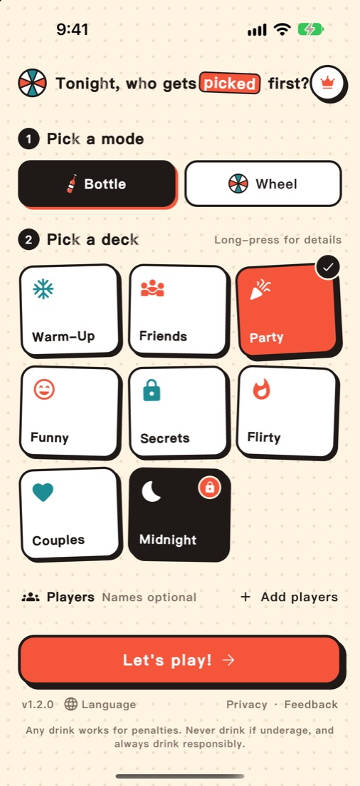

Pick a mode and categories
Choose Bottle Spin, Wheel of Fate or Quick Draw, then pick the categories you want.
A bottle-spin, wheel and card party game
Tap the phone to pick tonight's victim. Choose truth and answer honestly, or choose dare and do the challenge. No bottle needed — start now.

HOW TO PLAY
First time? Pick Classic Bottle Spin and start with the Warm-Up and Funny packs, then add more personal packs once the mood is up.
Choose Bottle Spin, Wheel of Fate or Quick Draw, then pick the categories you want.
Tap the bottle and whoever it lands on is up. The wheel and card draw work too.
Truth means answering honestly, Dare means doing the challenge. Then it's the next player's turn.
IN THE GAME

WHY THIS APP
No bottle or paper slips — dinners, dates, parties or camps. Works offline.
Bottle Spin, Wheel of Fate or Quick Draw — whether you want a ritual or a fast game.
Warm-Up, Friends, Party, Funny, Secrets, Flirty, Couples, Phone Exposed — mix as you like.
Start light and add personal packs later; adults-only content needs an age confirmation.
GAME MODES
You can mix categories — for example Warm-Up + Funny at a dinner, Couples for a date night, and add Friends and Secrets once everyone is comfortable.
QUESTION LIST
The app has over 2,000 questions, each a truth or a dare. These samples come from the Warm-Up, Funny, Friends and Party packs — light and easy to start with.
| Truth |
|---|
| What movie or show have you watched recently? |
| If you could have one superpower, what would it be? |
| What's your favorite thing to do on a day off? |
| If you won the lottery tomorrow, what's the first thing you'd buy? |
| What's the dumbest thing you've done that somehow felt totally reasonable at the time? |
| What's the one weird habit your friends always give you a hard time about? |
| What's the most awkward time you mistook someone for someone else or called them the wrong name? |
| Who here do you think has the worst fashion sense? |
| If we were all in a horror movie, who do you think would die first? |
| Dare |
|---|
| Introduce yourself in an alien voice. |
| Pick someone here and give them three genuine compliments. |
| Imitate an animal sound and let everyone guess what it is. |
| With the most over-the-top face, act out biting into a super sour lemon. |
| Hold your ugliest face for 10 seconds without cracking a smile. |
| Imitate three different animals eating their food. |
| Stand up and lead everyone in a 10-second cheer routine. |
| Pick a song and sing the chorus a cappella, then let everyone join in. |
| Pretend you're a concert headliner and hype up the crowd with your most epic opening line. |
| Pack | Best for |
|---|---|
| Warm-Up | Easy for new groups |
| Friends | The friendship test |
| Party | Get the room going |
| Funny | Silly, safe laughs |
| Secrets | Spill your stories |
| Flirty | Spark, but play safe |
| Couples | Sweet couple vibes |
| Phone Exposed | Your phone tells all |
| Midnight and 18+ | Adults only; age confirmation and full version required |
Parties, date nights, family dinners, team events, orientation, camps, class activities, camping nights. No bottle or paper slips needed — pass one phone around, and it works offline.
Free to download, with 20 questions per pack to start. The full version is a one-time purchase that unlocks every pack and removes ads. Switching phones? Tap “Restore Purchases” in the app.
FAQ
On your turn, choose Truth or Dare: Truth means answering a question honestly, Dare means completing a challenge. A spinning bottle, wheel or card draw picks who goes next.
Two or more. It works for friends, couples and family; the more people, the more fun the bottle spin gets.
Yes. The app has a Classic Bottle Spin you tap on screen, plus a Wheel of Fate and Quick Draw cards — no props needed.
Over 2,000 truths and dares in categories like Warm-Up, Friends, Party, Funny, Secrets, Flirty, Couples and Phone Exposed. A sample is listed further down this page.
Yes. The Couples and Flirty packs are written for two people, from light questions to chemistry tests.
Some packs (Midnight and 18+) are adults-only, require an age confirmation and are only available in the full version; they are not mixed into the regular packs. The rest focuses on funny, ice-breaking and friend-group questions.
No. It works offline and needs no account.
Free to download with 20 questions per pack to start. The full version is a one-time purchase that unlocks every pack and removes ads.
Currently iPhone and iPad only. There is no web version.
Pass one phone and start the next round.
Free downloadApp Store